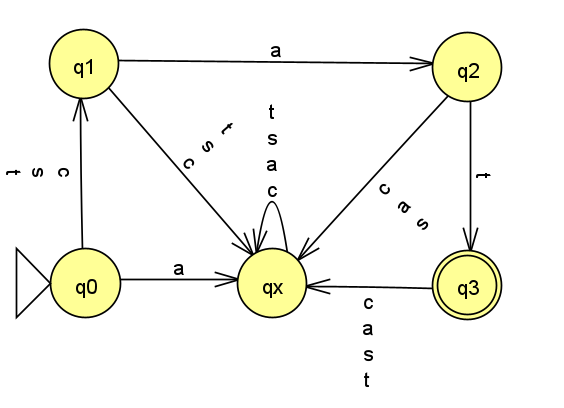
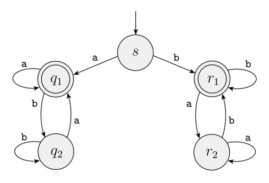
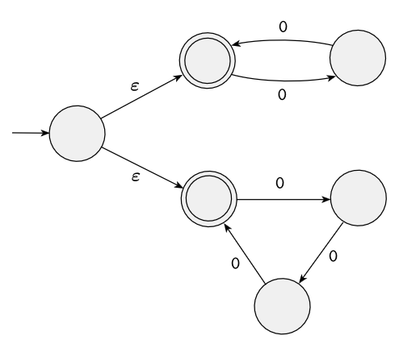

Homework 5
Last updated: Fri, 16 Oct 2026 22:47:35 -0400
Out: Thu Oct 15, 12:30 EDT Due: Thu Oct 22, 12:30 EDT
Note: Assignments are not officially "released" until—
and are subject to change without notice up to— the indicated "Out" date and time. If an assignment is posted early, students may look ahead but are responsible for ensuring that they are always working with the most recent version of the homework.
This assignment explores regular languages and regular expressions.
Homework Problems
Regular Expression Exercises (2 * 6 = 12 points)
Regular Expression Language is Regular? (12 points)
Induction Practice (10 points)
Proving Closed Operations Using Regular Expressions (12 points)
README (2 point)
Total: 48 points
Submitting
Submit your solution to this assignment in Gradescope hw5. Please assign each page to the correct problem and make sure your solutions are legible.
A submission must also include a README containing the required information.
1 Regular Expression Exercises
(2 points each)
Below are some languages (their alphabet \Sigma is as indicated) or (languages represented as) machines that we have previously seen in this course.
Come up with regular expressions that describe the given language, or the language recognized by the given machine:
L_{cats}=\{\texttt{cat},\texttt{sat},\texttt{tat}\} from Homework 2
\Sigma = \left\{\texttt{c},\texttt{a},\texttt{s},\texttt{t}\right\}
L_{grad} = \{w\mid w\textrm{ is a valid UMB CS grad course number}\} from Homework 2 \Sigma = \{\texttt{0},\texttt{2},\texttt{4},\texttt{6}\}
\textrm{BOS}(AR) from Homework 3, where AR = \{\texttt{bar},\texttt{car},\texttt{jar}\}
Sigma={b,a,r,h} \Sigma = \left\{\texttt{b,a,c,j,h}\right\}
The DFA:

The DFA

The NFA:

In addition to the regular expressions that are allowed by the formal definition of regular expressions, your answers may also use the following regular expression shorthands when convenient:
\Sigma means "any single symbol" from the alphabet.
For example, if the alphabet is \Sigma = \left\{\texttt{0},\texttt{1}\right\}, then the regular expression \Sigma is shorthand for \texttt{0} \cup \texttt{1}
\texttt{+} means "1 or more of the preceding regular expression".
For example, the regular expression \texttt{0+} is shorthand for \texttt{00}^*
2 Regular Expression Language is Regular?
We learned that R=\emptyset is a possible Regular Expression.
Now prove the following statement:
\mathrm{LangOf}(\emptyset) IS-A Regular Language
Make sure to prove this exact statement. Homework submissions proving a different statement or a variation of the above statement will not get any credit.
To make this problem non-trivial, your proof may not use the \mathrm{RegLangIFFRegEx} theorem that regular expressions represent regular languages (Sipser Theorem 1.54), or any regular expression conversion functions.
You also may not use any regular expression conversion functions.
3 Induction Practice
Prove that the following statement is true:
\sum_{i=1}^n i^2 =\frac{n(n+1)(2n+1)}{6}
Use induction on one of the natural numbers in the equation.
clearly state which value the induction is "on"
include a "main" proof template that has the same recursive structure as the type of then "on" data
include a base case proof
and an inductive case proof that declares the correct inductive hypothesis
4 Proving Closed Operations Using Regular Expressions
Prove that the regular languages are closed under \mathrm{UP}.
While this is the same theorem as the Another "Closed" Operation Problem from Homework 4, here you are required to use regular expressions to do the proof.
As seen in lecture, since we have decided to use regular expressions, we prove this alternate statement:
IF R IS-A Regular Expression THEN \mathrm{UP}(\mathrm{LangOf}(R)) IS-A Regular Language
Since regular expressions are defined recursively, this means that the proof must use recursion, i.e., it must be a proof by induction.
clearly state which value the induction is "on"
include a "main" proof template that has the same recursive structure as the type of the "on" data
include only the base case proof for \varepsilon
include only the inductive case proof for concatentation